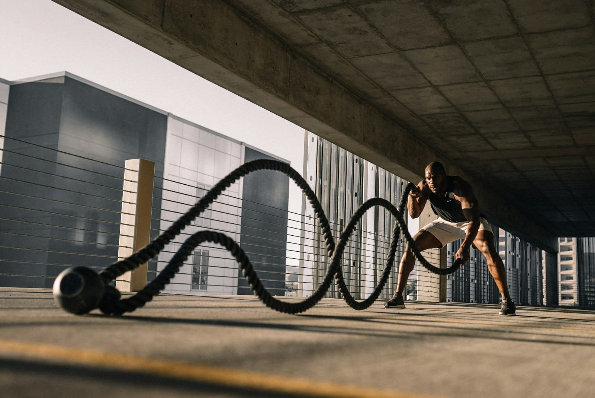

Currently leading design operations for Farsight at BaxEnergy — a Yokogawa company — where I took every screen under my umbrella and am accountable for how the whole product feels.1
I work where the problems are hardest and the users care the most: enterprise SaaS, real-time control rooms, growth funnels that turn pixels into revenue.2 I also ran Fit4Box, my own CrossFit apparel brand, because sometimes you need to ship your own thing.
Based in São Paulo, available for one senior engagement in Q3 2026.3 Currently open to full-time leadership roles and select freelance projects.
1 Accountable: visual direction, the system, and the language 30+ engineers build against — see 4.1.
2 Hardest: enterprise density, real-time data, and funnels measured at every step — see 4.1 and 4.2.
3 One: a single senior engagement, so the work gets the attention it needs.
4Selected work
Selected work
Three engagements where the brief was structural: a design language, a funnel, and a brand built from nothing.
4.12024 — Present
Farsight Design Direction & System
ClientBaxEnergy — a Yokogawa Company
RoleLead Designer / Design Ops
DisciplineDesign systems
Farsight shipped with no unified design direction — new modules clashed, onboarding suffered, entry-users were lost. I led the visual and UX reset, built the system, and aligned 30+ engineers across 6 teams around a single language.
Scope: Enterprise SaaS · 20+ modules · 6 teams.
10+Clients onboarded
20+New modules
30+Engineers guided
6Teams aligned
4.22019 — 2023
Growth Design
ClientToptal
RoleGrowth Designer
DisciplineGrowth & conversion
Four years of growth design on the freelancer side of Toptal — homepage, dynamic landing pages, a rate calculator, talent assessment, and a rebuilt signup. The brief: turn freelancers into leads, keep the journey consistent end to end, and make the pages earn their traffic organically.
My own brand — CrossFit apparel built for people who actually train. I ran the whole thing for eight months: identity, e-commerce, photography direction, and the product line itself.

Scope: Brand · e-commerce · apparel.
100+SKUs shipped
38%Repeat customers
500+Organic followers
8Months trading
5Lab
Lab
Self-initiated studies. Each one is a live surface on this site, not a screenshot.
WebGL refraction shader study — a faithful replica of the Semplice fluted-glass effect, built as a hero-surface study. The panel below is the live shader, not a screenshot.
Set in Archivo and JetBrains Mono. Twelve-column grid, 24px gutters. Hand-built, no framework, no build step. Reveals are one-shot and gated by prefers-reduced-motion.